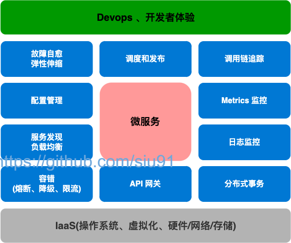

Java 后端框架选型指南
By Siu 2022/3/26
前言
其实从 2019 年疫情😷刚开始时就开始准备这部分的工作，2020-2021 其实也有了很所实践和总结，但整体还不够全面和立体，故这段时间趁着整理过往的实践再次梳理和总结关于 Java 后端的框架的选型。
整体架构
整体架构包括了：前端、后端、基础设施、规范、工具链等；这里先放出架构全景，这些其实是经过两年多的实践总结不断迭代的一个成果。
图-1:整体架构

服务端架构
图-1:服务端架构

选型
表-1:服务端选型列表
| 序号 | 大类 | 分类 | 框架/组件/工具/方法模型等 | 版本/规格/标准 | 备注 |
|---|---|---|---|---|---|
| 1 | 服务端 | 语言 | Java | Oracle JDK 1.8.0_161+ | 主要的技术栈为 Java；是否需要考虑 OpenJDK 方案/升级订阅商业版？ |
| 2 | 服务端 | 语言 | Python | 2.7、3.6 | 少量使用，多作为脚本或工具模块; |
| 3 | 服务端 | 语言 | Scala | 2.11.8 | 少量使用;Spark 数据处理； |
| 4 | 服务端 | 框架 | Spring Boot | 2.3.12.RELEASE | 另外关注到的还有更面向云原生的方案（GraalVM） Quarkus、Spring Native |
| 5 | 服务端 | 框架 | nacos | 2.1.4.RELEASE | 微服务注册与配置 |
| 6 | 服务端 | 数据库 | MySQL | 5.7.24 | 目前Mysql与PG相比，国内占比高，落地方案丰富。运维上无论是当前人员还是招聘市场都是熟悉Mysql远高于PG |
| 7 | 服务端 | 本地缓存 | Ehcache | 2.x (latest) | 少量项目使用；主要考量本地持久化，当前 Spring Boot 中推荐用 3.x |
| 8 | 服务端 | 数据库连接池 | Hikari | / | 1.Druid 高级特性项目中并未被使用，运维本身有其他方式监控SQL 2.Hikari默认被spring体系采用，版本维护与Spring Boot 主版本绑定 3.数据连接池本身与业务代码解耦，变更不涉及到业务代码改动。 |
| 9 | 服务端 | 中间件,OSS | MinIO | RELEASE.2020-06-22T03-12-50Z、latest（2021.8 dockerhub） | MinIO是一套高性能对象存储系统，兼容 Amazon S3 云存储服务，提供一套完整的OSS方案，支持云原生。近9000多家企业也都在使用MinIO产品。 |
| 10 | 服务端 | 框架,权限 | Shiro | 1.5.3 | 权限框架；封装在 UAC 的二方库中；按目前生态的发展会更倾向 Spring Security 风险点：当前的福州在用系统都要从shiro切换到Spring Security，涉及平台众多，改造工作量较大。从业务角度，改造后没有业务上直接提升。该部分暂时不做变动。 |
| 11 | 服务端 | 中间件,缓存 | Redis | 5.0.x | 缓存；客户端使用 Lettuce 版本与Spring Boot 主版本绑定，封装在 framework2中，redis module |
| 12 | 服务端 | 中间件,MQ | Kafka | 1.0.0 | 消息队列，客户端使用 Spring Kafka 版本与Spring Boot 主版本绑定；业务上没有特别多的需求，故靠近已有的大数据使用的 kafka |
| 13 | 服务端 | 框架,ORM | Mybatis | / | 封装在 framework2中，data module；也有调研 JPA+QueryDSL 、JOOQ |
| 14 | 服务端 | 框架,ORM | MyBatis-Plus | 3.3.2 | MyBatis-Plus VS tk-mybatis都是基于Mybaits插件功能开发的增强器，当前在功能丰富度和用户热度上 MyBatis-Plus要略优于tk-mybatis。因此统一选型后保留了MyBatis-Plus。 |
| 15 | 服务端 | 工具库,数据自动化 | Flyway | / | 数据库版本/数据库迁移管理工具；版本与Spring Boot 主版本绑定 |
| 16 | 服务端 | 框架,单元测试 | Junit | Junit4 | 单元测试 |
| 17 | 服务端 | 框架,参数验证 | Hibernator Validator | / | 参数校验； |
| 18 | 服务端 | 工具库,配置加密 | jasypt | 3.0.x | 用于配置文件中的参数值加密，如数据库账号密码；已封装在二方库中 |
| 19 | 服务端 | 工具库,验证码 | kaptcha | 2.3.2 | 验证码工具库，https://github.com/penggle/kaptcha |
| 20 | 服务端 | 工具库,样板代码 | Lombok | / | 基于注解方式，有效减少样板代码的工具库；版本与Spring Boot 主版本绑定 |
| 21 | 服务端 | 工具库,JSON | Jackson | / | Spring Boot 默认；版本与Spring Boot 主版本绑定 |
| 22 | 服务端 | 工具库,Log | Logback + Slf4j | / | Spring Boot 默认；版本与Spring Boot 主版本绑定 |
| 23 | 服务端 | 工具库,API 文档 | Swagger | 2.8.0 | 封装在 framework2中，data module；大量使用，默认和前端的API文档对接方式，前端会使用 API json 接口做 mock |
| 24 | 服务端 | 工具库,API 文档 | Knife4j | 2.0.4 | Swagger UI 增强； |
| 25 | 服务端 | 可观测性,诊断工具 | SkyWalking | 8.9.1 | 微服务日志链路追踪 |
| 26 | 服务端 | 框架,低代码 | magic-api | 1.7.1 | 少量实践使用；能有效提高开发效率，比较适用于大屏展示、报表等；同类的还调研了 Dataway |
| 27 | 服务端 | 构建工具,依赖管理 | Maven | 3.6 | 默认唯一的工具，团队开发中约束，主要基于大多数人熟悉 Maven |
| 28 | 服务端 | CI | Jenkins Pipeline | / | 使用 Jenkins 共享库的方式，自定义编排流水线（Gitlab+Jenkins+Nexus），后续会合并Harbor+k8s |
| 29 | 服务端 | 云原生,容器化 | Docker | 20.10.5 | 实践较少；使用 airflow 时用到 Rancher 1.x + docker（当前已迁移用 docker-compose 方式）；Jenkins 主从集群使用 Docker 构建 |
| 30 | 服务端 | 云原生,容器化 | k8s | 1.18 | 运维统一维护支持，开发环境正在使用KubeSphere 容器云纳管工具平台+ k8s ;线上环境构建k8s 使用Grafana监控 |
| 31 | 服务端 | 云原生,微服务框架 | Spring Cloud | / | 偏向于spring cloud Alibaba |
| 32 | 服务端 | 云原生,DevOps | KubeSphere | 3.1.1 | 开发、测试环境使用 |
| 33 | 服务端 | 云原生,持续交付 | Jenkins | 2.277.1 | 在非云环境中使用经验较多（交付到主机、虚拟机）；验证环境调研使用过 KubeSphere DevOps |
适用说明
Java 和 Spring
数据库、连接池、ORM
数据库自动化
这部分往往特别容易被忽视，但往往都会因为没有尽早考虑“数据库自动化”而引发不同程度的问题。
数据库自动化主要的收益有3大部分：
- 开发：sql 也是代码的一部分，要编码-》测试-》集成-》上线，用开发最熟悉的方式去管理；
- CI：对于ci ，数据库自动化是特别容易忽视，到问题出现时才会去想到要去构建数据库自动化的方案；
- 产品化：对于很多产品来说产品的迭代升级是一个重要的管理工作，数据库自动化会为此带来不可或缺的收益：多个版本的升级可以是一个”内治理的平衡“，不需要团队花费过多的精力。
在实践中主要的矛盾在于，“数据库自动化”这部分对于运维/DBA是黑盒，他们往往希望能够去审计上线的 SQL，所以需要根据团队具体情况去沟通，让运维/DBA了解这部分的收益和风险。
API 文档
项目文档、WIKI
CICD & GitFlow
CI 的工具链
目前经过两年过的实践比较合适目前团队的 CI 工具链主要由一下构成的：
- 代码版本管理 Gitlab
- 强大的、可扩展能力的 CI/CD 引擎 Jenkins
- Jenkins Piepline Library： 可定义和编排了 CI/CD 流水线(
Pipeline as Code) - 依赖管理、制品管理 Nexus/Harbor
- Devops 工具：Kubersphere （ks 其实还有更多关于微服务、云原生一站式的功能）
CI 流水线
图-1:CI流水线

GitFlow
图-1:GitFlow

Repo model
Mono Repo
Mutilple Repo
Maven
其它中间件
微服务和云原生
图-3:微服务选型关注点

图-1:微服务主流方案对比

开发规范和最佳实践
| 序号 | 大类 | 分类 | 框架/组件/工具/方法模型等 | 版本/规格/标准 | 备注 |
|---|---|---|---|---|---|
| 99 | 规范 | 代码管理 | 代码仓库使用规范 | / | 已修订，主要约束了 gitlab 中仓库组的层级、分类；仓库组的权限控制规则 |
| 100 | 规范 | 代码管理 | 代码提交规范 | / | 已修订，主要约束了 git commit message 的规格 |
| 101 | 规范 | 代码管理 | 代码风格规范 | / | 已修订，主要约束开发中使用的语言、脚本的风格，包括 Java、Scala、Python、Shell、JS |
| 102 | 规范 | 代码管理 | git 协同开发规范 | / | 已修订，主要约束代码仓库的分支规范、协同的工作流，参考 gitflow、gitlab flow |
| 103 | 规范 | 代码管理 | Code Review 指南 | / | 已修订，主要约束、指导了 CR 的原则和要点，评审人和 Commiter 的各自角色的关注点、协作方式 |
| 104 | 规范 | 代码管理 | PR 模板、ISSUE 模板 | / | 已修订，可能要针对不同的类型的项目做调整 |
| 105 | 规范 | 中间件使用 | 数据库开发规范 | / | 已修订，针对 PostgreSQL 做了开发规范约束 |
| 106 | 规范 | 中间件使用 | 缓存使用规范 | / | 未修订 |
| 107 | 规范 | 中间件使用 | 消息队列使用规范 | / | 未修订 |
| 108 | 规范 | 中间件使用 | 数据库自动化使用规范 | / | 已修订，主要约束了 Flyway SQL 的格式，并描述了最佳的实践方式 |
| 109 | 规范 | 中间件使用 | 三方库使用规范 | / | 未修订，需要包括前端、后端 |
| 110 | 规范 | 服务调用协议和标准 | RestFul API 设计规范 | / | 已修订，主要内容包括 RestFul Path、Http Method，Http Code，Header，Return Json Schema，最佳实践；参考：Paypal、Microsoft |
| 112 | 规范 | 开发流程 | 打包构建、制品规范 | / | 已修订，主要约束构建工具、构建方式、构建环境、构建产物规格；还有待调整补充 |
| 113 | 规范 | 开发流程 | 配置文件规约 | / | 未修订 |
| 114 | 规范 | 开发流程 | 单元测试规约 | / | 已修订 |
| 115 | 规范 | 开发流程 | 日志规约 | / | 未修订 |
| 116 | 规范 | 开发流程 | 前后端分离开发协同开发指南 | / | 未修订，主要规约协同的工具、方法、职责和流程 |
| 117 | 规范 | 基础 | 软件版本控制规范 | Semver 2.0 | 已修订，主要参考 Semver 2.0 制定 |
| 119 | 规范 | 基础 | 全局的命名规约 | / | 未修订，如用户ID，状态码，系统名称 |
开发工具
| 序号 | 大类 | 分类 | 框架/组件/工具/方法模型等 | 版本/规格/标准 | 备注 |
|---|---|---|---|---|---|
| 120 | 规范 | 工具 | IDE： WebStorm | 2021+ | 前端必须唯一使用；收费，无社区版 |
| 121 | 规范 | 工具 | IDE： IntelliJ IDEA | 2021+ Community | 后端必须唯一使用；迫于公司未统一采购，推荐用社区版 |
| 122 | 规范 | 工具 | Markdown 编辑器：Typora | <1.0、0.9.x(beta) | 迫于公司未统一采购，推荐使用 1.0 之前的免费版；能用 Markdown 就一定用，保持最佳的可见性 |
| 123 | 规范 | 工具 | 画图工具：Draw.io | 14+ | 多端都可以使用，在 vs code 、idea 里也可以集成 |
| 124 | 规范 | 工具 | 脑图工具：Xmind | 8+ | 推荐 Xmind，迫于收费，需要自行解决 |
| 125 | 规范 | 工具 | 数据库模型设计工具：DBeaver | 23+ | 待讨论，目前用 PowerDesigner 16 比较多，但只限于 win 环境；Navicat/DbSchema 可以多端，需要收费； |
| 126 | 规范 | 工具 | 阿里 Java 代码规约插件 | latest | IDEA 插件 |
| 127 | 规范 | 工具 | standard | 16.x | 前端默认代码规范检测工具 |
| 128 | 规范 | 工具 | commitlint | 12.x | git commit 格式规范工具 |
| 129 | 规范 | 工具 | docz | 2.x | react组件库文档工具，使用mdx格式，可直接生成组件使用、代码案例等；目前bui、zui等组件库均用其编写 |
| 130 | 规范 | 工具 | Docsify | 4.x | 文档站点工具；将 markdown 文档生成 web 站点，主要用于项目文档展示 |